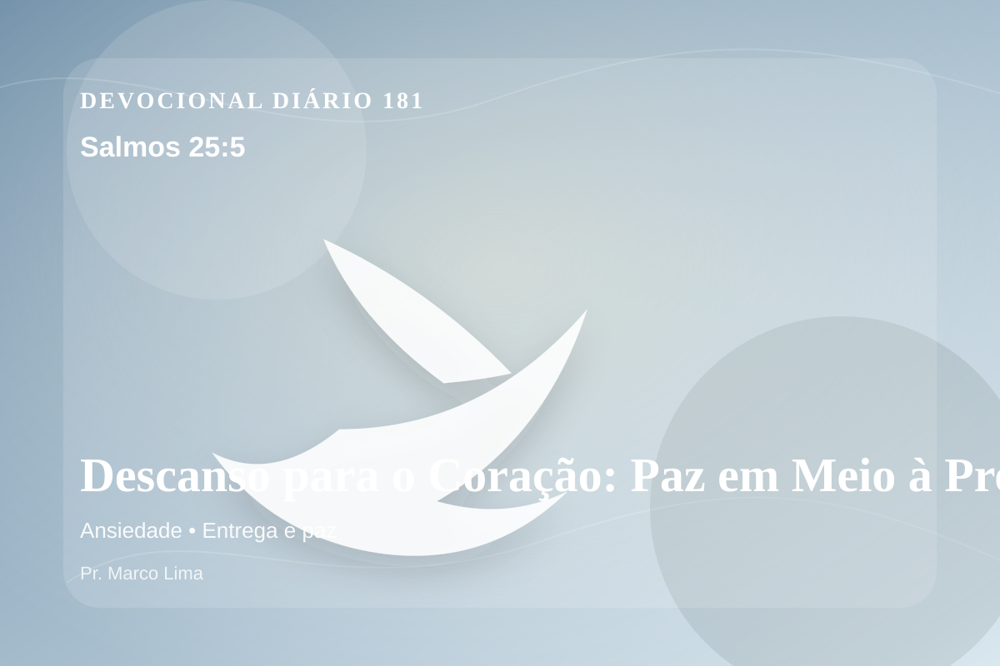

Descanso para o Coração: Paz em Meio à Pressa (Salmos 25:5)
Guia-me em tua verdade, e ensina-me; porque tu és o Deus de minha salvação; eu espero por ti o dia todo.
Pensamento
Esta meditação olha para a mesma verdade por outro ângulo, buscando obediência concreta e não apenas informação. Salmos 25:5 coloca diante de nós uma verdade capaz de atravessar a rotina, confrontar o coração e renovar a esperança em Deus.
Salmos 25:5 chama o coração a ouvir Deus com reverência e responder com fé prática. A Palavra não foi dada para enfeitar pensamentos religiosos, mas para conduzir pessoas reais ao Senhor.
O tema de ansiedade precisa ser recebido com simplicidade e seriedade. O Senhor não usa esta passagem para alimentar vaidade espiritual, mas para formar obediência sincera. A ansiedade tenta deslocar Deus do centro da confiança e colocar o peso da vida sobre os ombros humanos. A Escritura conduz o coração de volta à oração, à entrega e à certeza de que o Pai governa até aquilo que não conseguimos controlar.
Não transforme este devocional em informação religiosa. Pare por alguns instantes, nomeie diante de Deus aquilo que precisa mudar e peça um coração pronto para obedecer.
Arrependimento não é apenas sentir peso na consciência; é voltar-se para Deus, abandonar o caminho que entristece o Senhor e confiar que a graça de Cristo é suficiente para perdoar e transformar.
Este é o evangelho que sustenta toda aplicação: Jesus Cristo morreu pelos pecadores, ressuscitou em vitória e chama cada pessoa a responder com fé, arrependimento e uma vida rendida ao Seu senhorio.
O simples evangelho de Cristo Jesus continua sendo suficiente: arrependa-se, creia, receba perdão e caminhe em obediência pelo poder do Espírito Santo.
Não espere sentir tudo para obedecer. Comece com fidelidade no próximo passo, confiando que Deus sustenta quem responde à Sua voz.
Para Praticar Hoje
- Leia Salmos 25:5 lentamente e destaque uma palavra ou expressão central do texto.
- Confesse a Deus um pecado, resistência ou frieza espiritual que esta Palavra revelou.
- Declare sua fé em Jesus Cristo e pratique hoje uma atitude concreta de arrependimento e obediência.
Oração
Meu Deus, a vida cobra mais do que eu posso dar. Salmos 25:5 me convida a parar, respirar e confiar. Que eu não carregue sozinho o peso que Tu convidas a entregar. Toma para Ti o que me paralisa. Ensina-me a responder com simplicidade.
{kind=link}